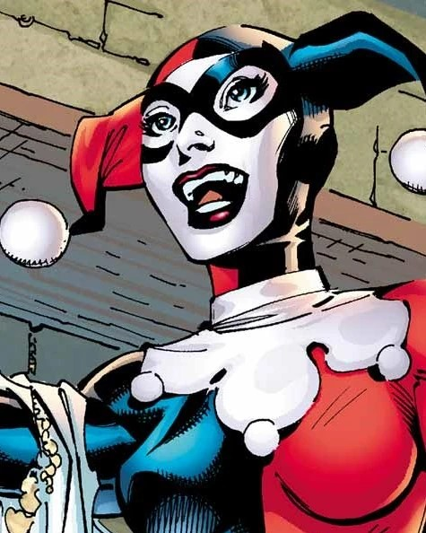
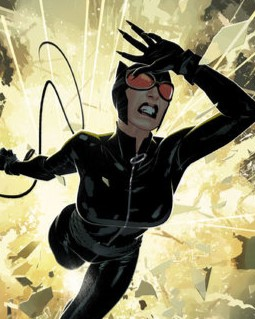
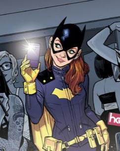

A botânica Pamela Isley foi transformada em um ser híbrido vegetal e humano através de um experimento fracassado. Com clorofila fluindo nas veias no lugar do sangue, ela desenvolveu um toque tóxico e um talento para a sedução, alimentado pelos feromônios. Hera Venenosa é uma das inimigas mais duradouras do Batman e pertence ao coletivo de adversários que compõem a galeria de vilões do Batman. Ela também é imune a qualquer tipo de toxina e consegue criar plantas em lugares sem sol e infértil. Hera Venenosa é descrita como um dos mais notórias eco-terroristas do mundo.
Poder:
Comuns:
  